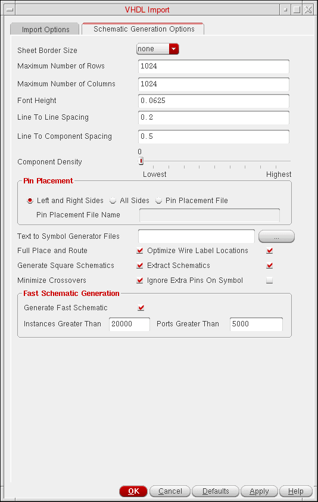

3
VHDL In Forms
This chapter discusses the following:
VHDL Import Form
You can use the VHDL Import form to select VHDL files to import into a library and also specify the options used for importing.
The parameters corresponding to many options and fields in this form are described in Chapter 8, “Creating a Parameter File.”
File Name is the field where you enter the name of a source file to import, a directory path to select files from, or a file name pattern to match.
Files List box either lists all files that match the file name pattern or lists subdirectories located in the current directory.
Target Library Name is the field where you enter the name of the library where the results from the import process are to be stored.
Import Files List box lists the VHDL files chosen from the Files List Box field for importing.
Add adds selections from the Files List Box to the Import Files List Box.
Remove removes selections from the Import Files List Box.
Import
Options
Import Structural Architectures As specifies the output format that VHDL In produces from the imported structural VHDL architectures. The default is schematic. The formats are
- schematic generates a Virtuoso Schematic Editor L schematic that graphically represents the VHDL architecture
- netlist generates an OA netlist that represents the connectivity of the VHDL architecture.
- vhdl imports the VHDL architecture as a text file to the target library.
This corresponds to the structuralViewType parameter in a parameter file.
Reference Libraries is a text field that you can use to specify the reference libraries for symbols when generating schematics or netlists for unbound or partially bound structural
This corresponds to the referenceLibraries parameter in a parameter file.
Symbol View Name specifies the view name to use for generating symbols during the import process. The default is symbol.
This corresponds to the symbolViewName parameter in a parameter file.
Overwrite Existing Views controls whether existing views in the target library are overwritten by the imported data. The checkbox is selected by default. The vhdl view is always overwritten.
This corresponds to the overwriteExistingView parameter in a parameter file.
Overwrite Symbol Views controls whether existing symbols in the target library are overwritten by the imported symbols. By default, the option is set as None and the existing symbol views are not overwritten.
Set this option to any of the following values to specify which symbols you want to overwrite:
- None does not overwrite any existing symbol.
-
Created by VhdlIn overwrites only those existing symbols that were created by VHDL In. These symbols have the
createdByproperty set asvhdlin. Symbols created by the any other tool remain unaffected. -
Created by TSG and Others overwrites the existing symbols created by the Text-to-Symbol generator or any other tool. For these symbols, either the
createdByproperty is not set or it is set as any value other thanvhdlin.
For more details about the Text-to-Symbol generator, see the Text To Symbol Generator Files section. - All overwrites the existing symbols with those imported by VHDL In.
This option corresponds to the overwriteSymbolView parameter in a parameter file.
Case Sensitive Symbol Matching specifies that symbol view name is case sensitive. By default, this option is selected.
User Specified Standard Libraries lets you specify your own standard libraries.
cds.lib.Maximum Number of Errors controls the maximum number of errors that can occur before the import process quits. The default is 10.
This corresponds to the maxError parameter in a parameter file.
Compile VHDL Views After Import is a box you click when you want your imported VHDL files to be parsed by the NC parser,
Compiler Options is the field where you specify the ncvhdl parser options you want to use when you set the Compile VHDL Views After Import to on. The default is an empty field.
VHDL WORK Library Name is the field where you specify the workarea that ncvhdl parser uses to store the intermediate results of the import process. You can use this work library when you want to import the design again.
This corresponds to the work_file parameter in a parameter file.
Summary File is the field where you enter the name to be given to the file that contains the combined contents of the log and the error files.
Compatibility option controls the enabling /disabling of the vendor compatibility mode. The default is OFF.
v93 option enables/disables the support of VHDL’93 features, while running the ncvhdl parser. The default is OFF.
Power
This option specifies the power net that VHDL In uses for power assignments in the schematic.
Net Name is the field where you specify the net name to assign to power. The default is vdd! VHDL In automatically appends "!" if "!" is not present in the net name.
This corresponds to the powerNetName parameter in a parameter file.
Value is the field where you specify the value of the power signal (net) that is replaced by the net name you specify. The default is 1.
This corresponds to the powerLiterals parameter in a parameter file.
Data Type is the field where you specify the VHDL data type for the power net. The default is std_ulogic.
This corresponds to the powerType parameter in a parameter file.
Ground
This option specifies the ground net that VHDL In uses for ground assignments in the schematic.
Net Name is the field where you specify the net name to assign to ground. The default is gnd! VHDL In automatically appends the "!" if "!" is not present in the net name.
This corresponds to the groundNetName parameter in a parameter file.
Value is the field where you specify the value of the ground signal (net) that is replaced by the net name you specify. The default is 0.
This corresponds to the groundLiterals parameter in a parameter file.
Data Type is the field where you specify the VHDL data type of the ground net. The default is std_ulogic.
This corresponds to the groundType parameter in a parameter file.
Schematic Generation Options Tab Page
Use the Schematic Generation Options tab to generate a schematic view of your design. The parameters corresponding to many options and fields in this form are described in Chapter 8, “Creating a Parameter File.”
-
On the VHDL Import form, click the Schematic Generation Options tab.
The Schematic Generation Options tab appears, as shown in the figure below.

This is a
This corresponds to the sheetBorderSize parameter in a parameter file.
This is the maximum number of rows of
Because of the size of the components and the size of the sheet, VHDL In might not be able to place the maximum number of rows on a sheet. If you specify a value that is too large for the size of the instance symbols and the size of the sheet, VHDL In places as many rows as it can fit on each sheet up to the maximum of 1024.
This corresponds to the maxNoRows parameter in a parameter file.
This is the maximum number of columns of components allowed on each generated schematic sheet. VHDL In uses this option only if it creates a multisheet schematic. The value must be an integer from 1 to 1024. The default is 1024.
Because of the size of the components and the size of the sheet, VHDL In might not be able to place the maximum number of columns on a sheet. If you specify a value that is too large for the size of the instance symbols and the size of the sheet, VHDL In places as many columns as it can fit on each sheet up to the maximum of 1024.
This corresponds to the maxNoCols parameter in a parameter file.
This option controls the height of the font used for pin, wire, and instance labels. The value is in user units. Pin labels are scaled down to 75 percent of the specified size. The default is 0.0625.
This corresponds to the fontHeight parameter in a parameter file.
This option controls the spacing between two adjacent nets. The value is in user units. The value ranges from 0.0 to 1000000.0. The default is 0.2.
This corresponds to the lineLineSpacing parameter in a parameter file.
This option controls the spacing between a component instance and an adjacent net. The value is in user units. The value ranges from 0.0 to 1000000.0. The default is 0.5.
This corresponds to the lineComponentSpacing parameter in a parameter file.
This option controls the number of components allowed on a single sheet in the case of schematics that instantiate sheet borders. The value ranges from 0 to 100. The higher the density value, the greater the number of components on one page. The default is 0.
This corresponds to the componentDensity parameter in a parameter file.
This option controls whether pins are placed in the generated schematic on the left and right sides only, on all four sides, or specified on a per pin basis in a pin placement file. The default is Left and Right Sides.
Text to Symbol Generator Files
Specify a space-separated list of tsg files to be used by VHDL In to generate the symbols in the target library. VHDL In internally runs the Text-to-Symbol generator, a tool that reads the symbol descriptions given in the tsg files to create symbol views.
For more details about the Text-to-Symbol generator and the tsg files, see
This option controls whether the generated schematic is fully placed and routed. Disabling this option causes VHDL In to generate a schematic that is connected by name only, which improves schematic generation performance in both time and memory. This option is selected by default.
This corresponds to the fullPlaceRouteSchematic parameter in a parameter file.
This option controls whether disproportionately long columns of components are broken up into many columns. This option is selected by default.
This corresponds to the squareSchematics parameter in a parameter file.
This option controls the aesthetic quality of the generated schematic by minimizing net crossovers. This option is selected by default.
This corresponds to the minimizeCrossovers parameter in a parameter file.
This option controls whether the location of wire labels is optimized. Disabling this option improves schematic generation performance in both time and memory, but might result in overlapping of names. This option is selected by default.
This corresponds to the optimizeLabels parameter in a parameter file.
This option controls the selection of symbols from the reference libraries. If this option is specified and VHDL In finds a reference symbol with the same name as specified in the VHDL design, the symbol will be picked up. The pins not referred will remain unconnected in the schematic.
Fast Schematic Generation
The options in this group box enable fast generation of the schematic when the design being imported contains a large number of instances or ports.
The following table lists the fields in the Fast Schematic Generation group box, with their default values and parameters. You can use the parameters in the parameter file or .cdsenv of VHDL In. For details on the parameter file, see Chapter 8, “Creating a Parameter File,”
| Field | Default Value | Parameter |
To use this feature, select the Generate Fast Schematic check box and specify the number of instances and ports in their respective fields. If the number of instances or ports in the design exceeds the specified number, the tool generates a schematic in which the instances are placed in a two-dimensional array without any routing, and the connectivity of the nets is indicated by names.
-
To enable the fast schematic generation feature without considering the number of instances or ports in the designs being imported, select Generate Fast Schematic and type
0in the Instances Greater Than and Ports Greater Than fields. - If you disable the fast schematic generation feature, and the design has a large number of instances and ports, schematic generation can take significant time to place and route the instances and nets.
Return to top